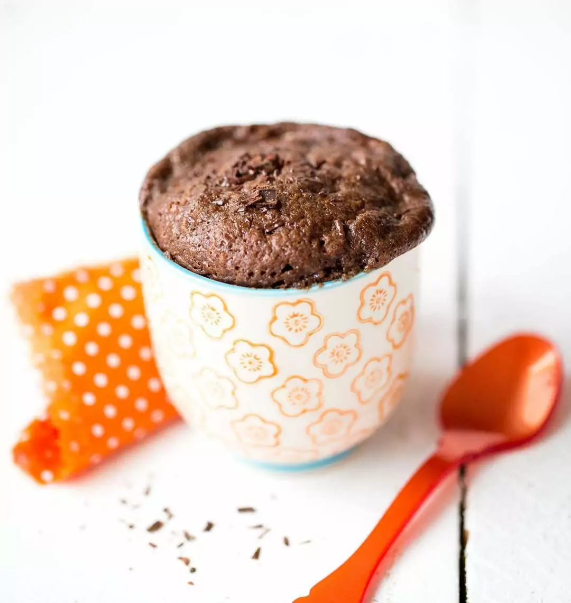

Le Mug Cake
Ingrédients
- 4 cuillères à soupe de farine
- 8 cuillères à soupe de lait
- 2 cuillères à soupe de sucre
- 4 cuillères à café d'huile
- Un peu de levure
- 2 cuillères à soupe de cacao (optionnel)
Préparation
- Mélanger les ingrédients secs.
- Ajouter le lait.
- Ajouter l'huile.
- Bien mélanger.
- Mettre au micro-onde puissance maximale pendant 1mn30 à 2mn.
